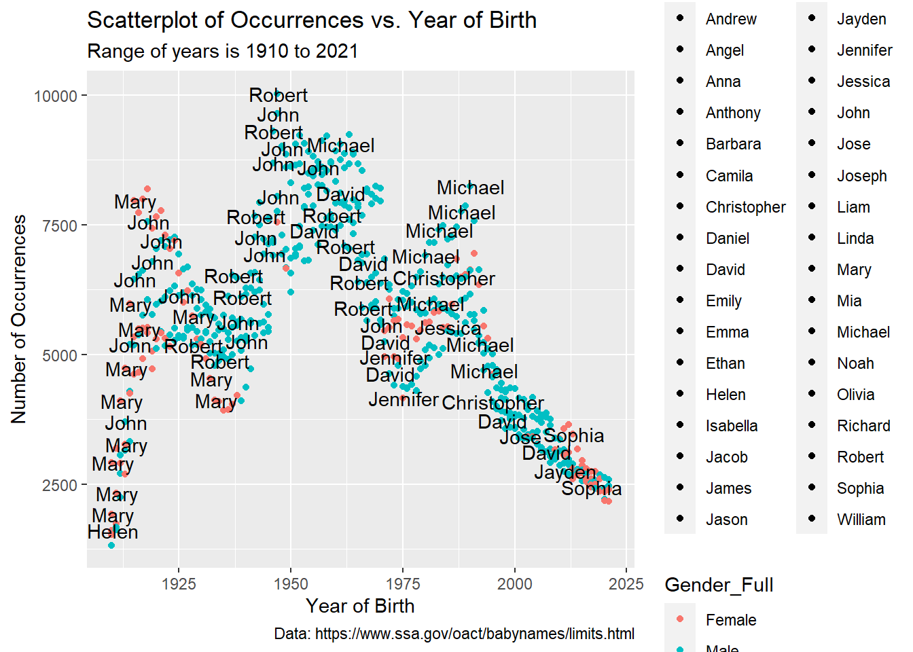
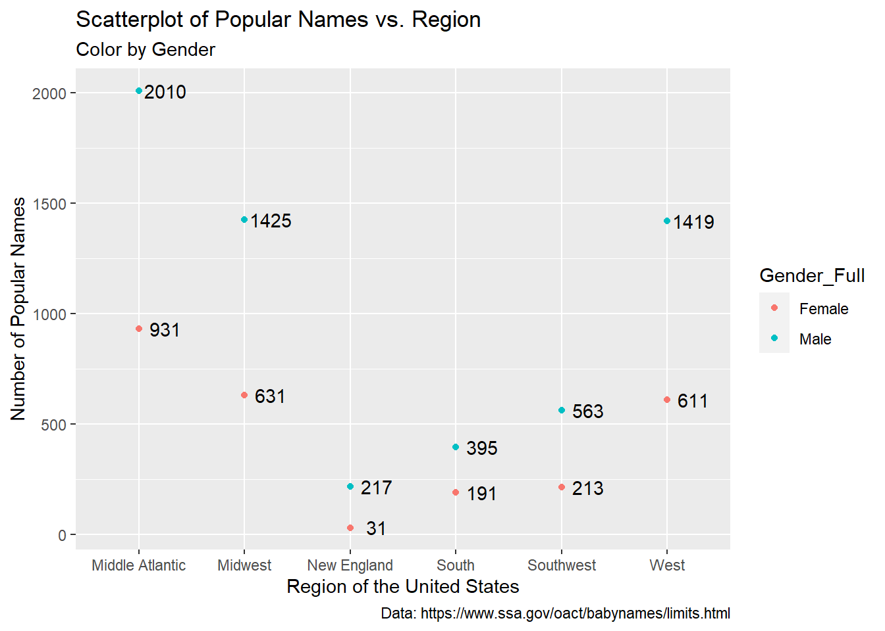

Code
library(tidyverse)
library(summarytools)
library(ggplot2)
library(devtools)
library(plotly)
knitr::opts_chunk$set(echo = TRUE)library(tidyverse)
library(summarytools)
library(ggplot2)
library(devtools)
library(plotly)
knitr::opts_chunk$set(echo = TRUE)It’s not hard to imagine a brand new mother and father leaving the hospital with their newborn child, cradling their bundle of joy as they eagerly drive home to spend time playing with the newest member of their family. Diaper changes, frequent feedings, and sleepless nights are among the multitude of things they will need to be prepared for during the baby’s first years of life. However, the one thing that excites them at the arrival of the baby is choosing his or her name. Over the years, many parents have named their children various popular and unique names like Sarah, Gertrude, Michael, and Samuel based on lists of baby girl and boy names. These lists have become so popular that the Social Security Administration (SSA) compiled a dataset that includes not just the top 1,000 popular names but the majority of names that are assigned to a Social Security Number (SSN). In this final project, I will analyze the Social Security Administration dataset containing almost all names associated with an SSN to answer the below research questions.
1. What are the top five baby names for each year from 1910 to 2021?
2. Which names have the largest difference in occurrences per region (i.e. which names have undergone the most change in usage)?
3. Are there consistently more popular girl names or popular boy names?
This dataset from the SSA contains fifty-one text files containing the two-digit state code, sex, year of birth ranging from 1910 to 2021, name, and number of occurrences for each state and the District of Columbia where the individual has an SSN. The data is restricted to only include names with at least five occurrences to preserve privacy. All of these files combined has 6,311,504 observations corresponding to a name for each state and year and 5 variables consisting of State, Gender, Year, Name, and Count.
Reviewing the summary of this baby_orig dataset, I find there are no missing values which is helpful when I do my analysis and visualizations. The states that make up the majority of the data are California with 400,762 observations (6.3% of the data), Texas with 368,987 observations (5.8% of the data), and New York with 309,532 observations (4.9% of the data). There are more female names than male names in this dataset with 3,510,324 female names (55.6% of the data) and 2,801,180 male names (44.4% of the data), meaning some states had a larger concentration of those with feminine names than masculine names in some years, which I find interesting. The names that appear the most within this dataset (not counting occurrences) is James with 7,409 observations, Leslie with 7,407 observations, and Lee with 7,313 observations. The highest number of occurrences for a name is 10,026 which happens to be with the male name Robert in New York the year 1947.
# import baby names data
baby_orig <- read_delim(c("_data/namesbystate/AK.TXT", "_data/namesbystate/AL.TXT", "_data/namesbystate/AR.TXT", "_data/namesbystate/AZ.TXT", "_data/namesbystate/CA.TXT", "_data/namesbystate/CO.TXT", "_data/namesbystate/CT.TXT", "_data/namesbystate/DC.TXT", "_data/namesbystate/DE.TXT", "_data/namesbystate/FL.TXT", "_data/namesbystate/GA.TXT", "_data/namesbystate/HI.TXT", "_data/namesbystate/IA.TXT", "_data/namesbystate/ID.TXT", "_data/namesbystate/IL.TXT", "_data/namesbystate/IN.TXT", "_data/namesbystate/KS.TXT", "_data/namesbystate/KY.TXT", "_data/namesbystate/LA.TXT", "_data/namesbystate/MA.TXT", "_data/namesbystate/MD.TXT", "_data/namesbystate/ME.TXT", "_data/namesbystate/MI.TXT", "_data/namesbystate/MN.TXT", "_data/namesbystate/MO.TXT", "_data/namesbystate/MS.TXT", "_data/namesbystate/MT.TXT", "_data/namesbystate/NC.TXT", "_data/namesbystate/ND.TXT", "_data/namesbystate/NE.TXT", "_data/namesbystate/NH.TXT", "_data/namesbystate/NJ.TXT", "_data/namesbystate/NM.TXT", "_data/namesbystate/NV.TXT", "_data/namesbystate/NY.TXT", "_data/namesbystate/OH.TXT", "_data/namesbystate/OK.TXT", "_data/namesbystate/OR.TXT", "_data/namesbystate/PA.TXT", "_data/namesbystate/RI.TXT", "_data/namesbystate/SC.TXT", "_data/namesbystate/SD.TXT", "_data/namesbystate/TN.TXT", "_data/namesbystate/TX.TXT", "_data/namesbystate/UT.TXT", "_data/namesbystate/VA.TXT", "_data/namesbystate/VT.TXT", "_data/namesbystate/WA.TXT", "_data/namesbystate/WI.TXT", "_data/namesbystate/WV.TXT", "_data/namesbystate/WY.TXT"), delim = ",", col_names = c("State", "Gender", "Year", "Name", "Count"))Rows: 6311504 Columns: 5
── Column specification ────────────────────────────────────────────────────────
Delimiter: ","
chr (3): State, Gender, Name
dbl (2): Year, Count
ℹ Use `spec()` to retrieve the full column specification for this data.
ℹ Specify the column types or set `show_col_types = FALSE` to quiet this message.# view baby_orig data frame
baby_orig# A tibble: 6,311,504 × 5
State Gender Year Name Count
<chr> <chr> <dbl> <chr> <dbl>
1 AK F 1910 Mary 14
2 AK F 1910 Annie 12
3 AK F 1910 Anna 10
4 AK F 1910 Margaret 8
5 AK F 1910 Helen 7
6 AK F 1910 Elsie 6
7 AK F 1910 Lucy 6
8 AK F 1910 Dorothy 5
9 AK F 1911 Mary 12
10 AK F 1911 Margaret 7
# … with 6,311,494 more rows# view summary of baby_orig
dfSummary(baby_orig)Data Frame Summary
baby_orig
Dimensions: 6311504 x 5
Duplicates: 0
----------------------------------------------------------------------------------------------------------------
No Variable Stats / Values Freqs (% of Valid) Graph Valid Missing
---- ------------- --------------------------- ---------------------- --------------------- ---------- ---------
1 State 1. CA 400762 ( 6.3%) I 6311504 0
[character] 2. TX 368987 ( 5.8%) I (100.0%) (0.0%)
3. NY 309532 ( 4.9%)
4. IL 237839 ( 3.8%)
5. FL 218192 ( 3.5%)
6. PA 206944 ( 3.3%)
7. OH 204165 ( 3.2%)
8. GA 191367 ( 3.0%)
9. MI 190023 ( 3.0%)
10. NC 181647 ( 2.9%)
[ 41 others ] 3802046 (60.2%) IIIIIIIIIIII
2 Gender 1. F 3510324 (55.6%) IIIIIIIIIII 6311504 0
[character] 2. M 2801180 (44.4%) IIIIIIII (100.0%) (0.0%)
3 Year Mean (sd) : 1977.2 (31.3) 112 distinct values : 6311504 0
[numeric] min < med < max: . : : (100.0%) (0.0%)
1910 < 1983 < 2021 . . : : : :
IQR (CV) : 52 (0) . : . : : : : : : :
: : : : : : : : : :
4 Name 1. James 7409 ( 0.1%) 6311504 0
[character] 2. Leslie 7407 ( 0.1%) (100.0%) (0.0%)
3. Lee 7313 ( 0.1%)
4. John 7221 ( 0.1%)
5. Robert 7174 ( 0.1%)
6. Jessie 6922 ( 0.1%)
7. William 6880 ( 0.1%)
8. Michael 6756 ( 0.1%)
9. Mary 6699 ( 0.1%)
10. Charles 6624 ( 0.1%)
[ 32393 others ] 6241099 (98.9%) IIIIIIIIIIIIIIIIIII
5 Count Mean (sd) : 50.7 (173.1) 4938 distinct values : 6311504 0
[numeric] min < med < max: : (100.0%) (0.0%)
5 < 12 < 10026 :
IQR (CV) : 26 (3.4) :
:
----------------------------------------------------------------------------------------------------------------# find the name with the largest number of occurrences
filter(baby_orig, Count == 10026)# A tibble: 1 × 5
State Gender Year Name Count
<chr> <chr> <dbl> <chr> <dbl>
1 NY M 1947 Robert 10026After importing the data and looking at its summary statistics, I will refine some of the values to make it clearer what they represent. I will rename the values in the State and Gender columns to their appropriate state names and male and female as the State_Full and Gender_Full columns. I will also add a column called Region to compare names between different regions of the United States since it would be difficult to compare all fifty states and the District of Columbia. Note that the District of Columbia is included in the Middle Atlantic region despite not being a state. Additionally, Gender_Full will be converted into a factor for ease of visualization.
baby <- baby_orig %>%
# create a Region column
mutate(Region = case_when(
State == c("CT", "ME", "MA", "NH", "RI", "VT") ~ "New England",
State == c("DC", "DE", "MD", "NJ", "NY", "PA") ~ "Middle Atlantic",
State == c("AL", "AR", "FL", "GA", "KY", "LA", "MS", "MO", "NC", "SC", "TN", "VA", "WV") ~ "South",
State == c("IL", "IN", "IA", "KS", "MI", "MN", "NE", "ND", "OH", "SD", "WI") ~ "Midwest",
State == c("AZ", "NM", "OK", "TX") ~ "Southwest",
State == c("AK", "CA", "CO", "HI", "ID", "MT", "NV", "OR", "UT", "WA", "WY") ~ "West",
TRUE ~ NA_character_
)) %>%
# replace NAs in Region column
fill(Region, .direction = "down") %>%
# recode State values
mutate(State_Full = recode(State, "AL" = "Alabama", "AK" = "Alaska", "AZ" = "Arizona", "AR" = "Arkansas", "CA" = "California", "CO" = "Colorado", "CT" = "Connecticut", "DE" = "Delaware", "DC" = "District of Columbia", "FL" = "Florida", "GA" = "Georgia", "HI" = "Hawaii", "ID" = "Idaho", "IL" = "Illinois", "IN" = "Indiana", "IA" = "Iowa", "KS" = "Kansas", "KY" = "Kentucky", "LA" = "Louisiana", "ME" = "Maine", "MD" = "Maryland", "MA" = "Massachussetts", "MI" = "Michigan", "MN" = "Minnesota", "MS" = "Mississippi", "MO" = "Missouri", "MT" = "Montana", "NE" = "Nebraska", "NV" = "Nevada", "NH" = "New Hampshire", "NJ" = "New Jersey", "NM" = "New Mexico", "NY" = "New York", "NC" = "North Carolina", "ND" = "North Dakota", "OH" = "Ohio", "OK" = "Oklahoma", "OR" = "Oregon", "PA" = "Pennsylvania", "RI" = "Rhode Island", "SC" = "South Carolina", "SD" = "South Dakota", "TN" = "Tennessee", "TX" = "Texas", "UT" = "Utah", "VT" = "Vermont", "VA" = "Virginia", "WA" = "Washington", "WV" = "West Virginia", "WI" = "Wisconsin", "WY" = "Wyoming")) %>%
# recode Gender values
mutate(Gender_Full = recode(Gender, "M" = "Male", "F" = "Female")) %>%
# delete State and Gender columns
select(!c(State, Gender))Warning in State == c("CT", "ME", "MA", "NH", "RI", "VT"): longer object length
is not a multiple of shorter object lengthWarning in State == c("DC", "DE", "MD", "NJ", "NY", "PA"): longer object length
is not a multiple of shorter object lengthWarning in State == c("AL", "AR", "FL", "GA", "KY", "LA", "MS", "MO", "NC", :
longer object length is not a multiple of shorter object lengthWarning in State == c("IL", "IN", "IA", "KS", "MI", "MN", "NE", "ND", "OH", :
longer object length is not a multiple of shorter object lengthWarning in State == c("AK", "CA", "CO", "HI", "ID", "MT", "NV", "OR", "UT", :
longer object length is not a multiple of shorter object length# convert Gender_Full into a factor
baby$Gender_Full <- factor(baby$Gender_Full)
# view baby dataset
baby# A tibble: 6,311,504 × 6
Year Name Count Region State_Full Gender_Full
<dbl> <chr> <dbl> <chr> <chr> <fct>
1 1910 Mary 14 West Alaska Female
2 1910 Annie 12 West Alaska Female
3 1910 Anna 10 West Alaska Female
4 1910 Margaret 8 West Alaska Female
5 1910 Helen 7 West Alaska Female
6 1910 Elsie 6 West Alaska Female
7 1910 Lucy 6 West Alaska Female
8 1910 Dorothy 5 West Alaska Female
9 1911 Mary 12 West Alaska Female
10 1911 Margaret 7 West Alaska Female
# … with 6,311,494 more rows# check that all states are in their appropriate regions
table(baby$Region)
Middle Atlantic Midwest New England South Southwest
883857 1384692 371959 1876994 690296
West
1103706 table(baby$State_Full)
Alabama Alaska Arizona
139293 29755 122085
Arkansas California Colorado
105373 400762 112986
Connecticut Delaware District of Columbia
84948 33706 57265
Florida Georgia Hawaii
218192 191367 56069
Idaho Illinois Indiana
60445 237839 145357
Iowa Kansas Kentucky
97515 97839 122608
Louisiana Maine Maryland
153712 51852 116699
Massachussetts Michigan Minnesota
123558 190023 119310
Mississippi Missouri Montana
117316 144136 47144
Nebraska Nevada New Hampshire
74699 50829 40557
New Jersey New Mexico New York
159695 77755 309532
North Carolina North Dakota Ohio
181647 47666 204165
Oklahoma Oregon Pennsylvania
121465 92410 206944
Rhode Island South Carolina South Dakota
41540 122527 48865
Tennessee Texas Utah
147212 368987 93764
Vermont Virginia Washington
29483 154400 130809
West Virginia Wisconsin Wyoming
79250 121398 28751 This dataset is now pretty tidy, so I will prepare for my visualizations by generating some summary data frames that will make it easier to analyze and answer my research questions.
The first data frame consists of the top five baby names for each year by grouping the baby data frame by Year, arranging in descending order by Count, and then taking only the top five observations for each year.
The second data frame will help answer the second research question by calculating the difference between the minimum and maximum occurrences for each name in each region. This is done by grouping the baby data frame by Region and Name and then summarizing by the minimum Count (min_count), maximum Count (max_count), and the difference between the two (difference). For ease of visualization, I will only extract the top five names with the largest difference in each region.
The third data frame finds the number of popular names for each gender in each region in order to determine whether there are more popular girl names or popular boy names. This data frame filters the baby data frame with only names that have a Count of 2,000 or more, grouped by Gender_Full and Region, and summarized by the number of occurrences. The definition of “popular” is arbitrary but I chose a limit of 2,000 occurrences or more for each name to be considered popular because the mean Count is 50.7, so 2,000 seems like a good value determining whether the name is deemed popular or not.
# get the top 5 baby names for each year
top_5_baby <- baby %>%
group_by(Year) %>%
arrange(desc(Count)) %>%
slice_head(n = 5)
# view top_5_baby data frame
top_5_baby# A tibble: 560 × 6
# Groups: Year [112]
Year Name Count Region State_Full Gender_Full
<dbl> <chr> <dbl> <chr> <chr> <fct>
1 1910 Mary 2913 West Pennsylvania Female
2 1910 Mary 1923 Middle Atlantic New York Female
3 1910 Helen 1604 Middle Atlantic Pennsylvania Female
4 1910 Anna 1534 Middle Atlantic Pennsylvania Female
5 1910 John 1326 Middle Atlantic Pennsylvania Male
6 1911 Mary 3188 Middle Atlantic Pennsylvania Female
7 1911 Mary 2322 Middle Atlantic New York Female
8 1911 Helen 1733 Middle Atlantic Pennsylvania Female
9 1911 John 1672 Middle Atlantic Pennsylvania Male
10 1911 John 1624 Middle Atlantic New York Male
# … with 550 more rows# get the top 5 names with the largest difference between occurrences in each region
change_baby <- baby %>%
group_by(Region, Name) %>%
summarize(min_count = min(Count),
max_count = max(Count),
difference = max_count - min_count) %>%
arrange(desc(difference)) %>%
slice_head(n = 5)`summarise()` has grouped output by 'Region'. You can override using the
`.groups` argument.# view change_baby data frame
change_baby# A tibble: 30 × 5
# Groups: Region [6]
Region Name min_count max_count difference
<chr> <chr> <dbl> <dbl> <dbl>
1 Middle Atlantic Robert 5 10026 10021
2 Middle Atlantic John 5 9639 9634
3 Middle Atlantic Michael 5 9241 9236
4 Middle Atlantic Mary 5 8184 8179
5 Middle Atlantic Linda 5 7542 7537
6 Midwest Michael 5 6221 6216
7 Midwest Linda 5 5885 5880
8 Midwest David 5 5495 5490
9 Midwest Robert 5 5427 5422
10 Midwest James 5 5349 5344
# … with 20 more rows# get the most popular gender of names for each region
gender_baby <- baby %>%
filter(Count >= 2000) %>%
group_by(Gender_Full, Region) %>%
summarize(n = n())`summarise()` has grouped output by 'Gender_Full'. You can override using the
`.groups` argument.# view gender_baby data frame
gender_baby# A tibble: 12 × 3
# Groups: Gender_Full [2]
Gender_Full Region n
<fct> <chr> <int>
1 Female Middle Atlantic 931
2 Female Midwest 631
3 Female New England 31
4 Female South 191
5 Female Southwest 213
6 Female West 611
7 Male Middle Atlantic 2010
8 Male Midwest 1425
9 Male New England 217
10 Male South 395
11 Male Southwest 563
12 Male West 1419For my research question regarding the top five baby names for each year, I will use the top_5_baby data frame I created to aid in making this visualization. I created a scatterplot below with Year as the independent variable and Count as the dependent variable. I also added Gender_Full as a color aesthetic and Name as a fill aesthetic in order to see the gender and names for each year. Moreover, Name text labels were included to display the names for each point on this plot.
# create a scatterplot of Count vs. Year with Name labels and Gender colors
ggplot(top_5_baby, aes(Year, Count)) +
geom_point(aes(color = Gender_Full, fill = Name)) +
geom_text(
label = top_5_baby$Name,
nudge_x = 0.25, nudge_y = 0.25,
check_overlap = T
) +
labs(
x = "Year of Birth",
y = "Number of Occurrences",
title = "Scatterplot of Occurrences vs. Year of Birth",
subtitle = "Range of years is 1910 to 2021",
caption = "Data: https://www.ssa.gov/oact/babynames/limits.html"
)
This scatterplot illustrates well the top names and their occurrences over time. We can see from the early years around 1925 that the name “Mary” was very popular and shows up several times during those years. The name “John” was also a popular name at the same time. As we get to the 1950s, we see less female names and more male names such as “Robert”, “John”, and “David”. This may be in correlation to the “baby boom” that occurred from the late 1940s to the early 1960s as World War II ended and families were settling down and having more children. Moving toward the 1970s through 1990s, girl names such as “Jennifer” and “Jessica” are rising in popularity while boy names like “Robert” dwindle in popularity in favor for “Michael” and “Daniel”. Lastly, from the 2000s on, there’s a good mix of popular male and female names like “Jayden”, “Mia”, and “Isabella”, which could be related to celebrities and other well-known people naming their kids very unique names and the general public wanting to keep the trend with their children.
Although this plot effectively portrays popular names over time, it is not clear which points correspond to each year. To resolve this, I created an interactive version of my scatterplot above to make it easier to view which points are with which year, gender, and name. I removed the text labels to reduce clutter on the graph. Hovering over each point shows the Year, Count, Gender_Full, and Name.
# create an interactive version of the scatterplot above
ggplotly(ggplot(top_5_baby, aes(Year, Count)) +
geom_point(aes(color = Gender_Full, fill = Name)) +
labs(
x = "Year of Birth",
y = "Number of Occurrences",
title = "Scatterplot of Occurrences vs. Year of Birth",
subtitle = "Range of years is 1910 to 2021",
caption = "Data: https://www.ssa.gov/oact/babynames/limits.html"
))This scatterplot looks a lot cleaner and clearer as to which names are in the top five for each year. As we saw previously, “Mary” consistently ranks in the top five from 1910 to around 1937, with its highest number of occurrences in 1918 at 8,184. Also aforementioned in the data import paragraph, we see “Robert” with the highest number of occurrences overall at 10,026 in 1947. “John” has the lowest number of occurrences overall at 1,326 in 1910. It’s interesting to observe how the number of occurrences changed over time from under 2,500 in 1910 to reaching over 10,000 to slowly coming back to 2,500 by 2021. This demonstrates that even with the American population increasing over the last century, not all parents are naming their children after the latest trending names.
The below bar graph will answer my second research question about the names that have the largest differences in occurrences per region. I used the change_baby data frame I made earlier with Name as the independent variable and difference as the dependent variable. I added color by Region and faceting by Region as well to make it easier to see which region has the names that went through the most change in usage over time. Additionally, text labels were added to show the difference for each name.
# create a bar graph of difference vs. Name colored and faceted by Region
ggplot(change_baby, aes(Name, difference)) +
geom_col(aes(fill = Region)) +
facet_wrap(vars(Region), scales = "free_x") +
guides(x = guide_axis(angle = 90)) +
geom_text(
label = change_baby$difference,
check_overlap = T
) +
labs(
x = "Name",
y = "Difference",
title = "Bar Graph of Difference vs. Name",
subtitle = "Note: This only includes names with the largest differences \n between minimum and maximum occurrences per region",
caption = "Data: https://www.ssa.gov/oact/babynames/limits.html"
)
Looking at this chart, it’s clear that the differences in minimum and maximum occurrences between names from different regions vary immensely. We see the Middle Atlantic region went through the most changes, along with the West, Midwest, Southwest, New England, and South in that order. “Robert” went through the greatest change in usage overall with a difference of 10,021 occurrences in the Middle Atlantic region. Furthermore, “Robert” also appeared in the Midwest, New England, and West graphs with large differences. The names that went through the greatest change in usage for the Midwest, New England, South, Southwest, and West are “Michael” with a difference of 6,216, “Robert” with a difference of 3,890, “James” with a difference of 3,877, “Linda” with a difference of 5,054, and “Michael” with a difference of 8,257 respectively.
What’s intriguing about this graph is that there are more male names that went through a larger change in usage than female names. There are only one to two female names in each region except for New England. I wonder if girl names were generally not as popular as boy names or if there is a different reason why this phenomenon occurred?
Finally, my last visualization is a scatterplot that answers my last research question of whether there are more popular girl names or popular boy names, “popular” meaning the name has a number of occurrences of 2,000 or more. We’ve already seen part of the answer from the last visualization above but the scatterplot below uses the gender_baby data frame created earlier with Region as the independent variable and n as the dependent variable. A color aesthetic is added to portray Gender_Full for each point as well as a text label showing n for each point.
# create a scatterplot of n vs. Region with color by Gender_Full
ggplot(gender_baby, aes(Region, n)) +
geom_point(aes(color = Gender_Full)) +
geom_text(
label = gender_baby$n,
nudge_x = 0.25, nudge_y = 0.25,
check_overlap = T
) +
labs(
x = "Region of the United States",
y = "Number of Popular Names",
title = "Scatterplot of Popular Names vs. Region",
subtitle = "Color by Gender",
caption = "Data: https://www.ssa.gov/oact/babynames/limits.html"
)
This plot illustrates there are more popular boy names for each region than popular girl names. The Middle Atlantic region has 2,010 popular boy names which is the highest overall, with the Midwest with 1,425 names, the West with 1,419 names, the Southwest with 563 names, the South with 395 names, and New England with 217 names following after. The Middle Atlantic also has the most popular girl names with 931 names, with the Midwest with 631 names, the West with 611 names, the Southwest with 213 names, the South with 191 names, and New England with 31 names following shortly after.
The reason why the Middle Atlantic consistently has the most popular baby names and the largest changes in usage for each name is most likely because New York and Pennsylvania are part of the Middle Atlantic and the population in both places grew exponentially over time, especially with immigration. There was a variety of names given to immigrants when they entered the United States so it makes sense that some who had foreign names that were difficult to pronounce in English were given more “American” names as American citizens. The other plausible reason may be due to the “baby boom” as aforementioned previously and the huge increase in newborn babies led to popular names changing rapidly.
Overall, I feel excited and proud of this project. I have always been interested in learning the origins of baby names (especially mine since the spelling of my name is not common) and looking at their popularity. The process with this project seemed relatively straightforward but had some complexity to it with the addition of the `Region` variable and re-coding the `State` and `Gender` variables. It was easier to compare the frequency of baby names across `Region` versus `State` but if I had more time, I would do a comparison with `State` to see how the frequency of names vary within each `State` in each region.
Moreover, I had to change the analysis for my second research question in order to show the baby names that went through the most change in usage over time. Limiting only to the top five names in each region that went through the most change was the best option for visualization purposes; otherwise, it would’ve been difficult to clearly view the graph with every name and its `difference` in each region.
I would love to know the reasons behind why boy names are more popular than girl names and why boy names changed more often in usage than girl names. The answer to these observations would be a wonderful starting point for the next steps to this project in the future. I would also like to go more in depth with the analysis by looking into the names that had the least number of occurrences (in this dataset it would be five) and researching why these names were not as popular as the others.
From this Social Security Administration dataset on baby names, we can conclude that the top five baby names vary each year but in several years we see “Mary”, “John”, “Robert”, “Jennifer”, and “Michael” consistently appear towards the top. The range of occurrences for each name had gone from 2,500 to 10,000 between 1910 and 2021. The Middle Atlantic region has the greatest change in usage for names with “Robert” having the largest change overall. In general, male names had a larger difference in occurrences than female names. Finally, in regards to popularity, boy names tend to be more popular than girl names, with the Middle Atlantic region again ranking the highest with popular names overall (2,010 boy and 931 girl names). All of the research questions have been answered but in the future it would be beneficial to research more about the reasoning behind these phenomenons such as the popularity and change in usage of boy names.
“International Programs - Two- Letter State Abbreviations.” Accessed December 18, 2022. https://www.ssa.gov/international/coc-docs/states.html.
“Popular Baby Names.” Accessed December 17, 2022. https://www.ssa.gov/oact/babynames/limits.html.
“State Regions.” Accessed December 18, 2022. https://www.infoplease.com/us/states/regions-of-the-us.
C. Sievert. Interactive Web-Based Data Visualization with R, plotly, and shiny. Chapman and Hall/CRC Florida, 2020.
Comtois D (2022). summarytools: Tools to Quickly and Neatly Summarize Data. R package version 1.0.1, https://CRAN.R-project.org/package=summarytools.
H. Wickham. ggplot2: Elegant Graphics for Data Analysis. Springer-Verlag New York, 2016.
R Core Team (2022). R: A language and environment for statistical computing. R Foundation for Statistical Computing, Vienna, Austria. URL https://www.R-project.org/.
Wickham H, Averick M, Bryan J, Chang W, McGowan LD, François R, Grolemund G, Hayes A, Henry L, Hester J, Kuhn M, Pedersen TL, Miller E, Bache SM, Müller K, Ooms J, Robinson D, Seidel DP, Spinu V, Takahashi K, Vaughan D, Wilke C, Woo K, Yutani H (2019). “Welcome to the tidyverse.” Journal of Open Source Software, 4(43), 1686. doi:10.21105/joss.01686 https://doi.org/10.21105/joss.01686.
Wickham, H., & Grolemund, G. (2016). R for data science: Visualize, model, transform, tidy, and import data. OReilly Media.
Wickham H, Hester J, Chang W, Bryan J (2022). devtools: Tools to Make Developing R Packages Easier. R package version 2.4.5, https://CRAN.R-project.org/package=devtools.
# view session info
session_info()─ Session info ───────────────────────────────────────────────────────────────
setting value
version R version 4.2.1 (2022-06-23 ucrt)
os Windows 10 x64 (build 19044)
system x86_64, mingw32
ui RTerm
language (EN)
collate English_India.utf8
ctype English_India.utf8
tz America/New_York
date 2022-12-20
pandoc 2.18 @ C:/Program Files/RStudio/bin/quarto/bin/tools/ (via rmarkdown)
─ Packages ───────────────────────────────────────────────────────────────────
package * version date (UTC) lib source
assertthat 0.2.1 2019-03-21 [1] CRAN (R 4.2.1)
backports 1.4.1 2021-12-13 [1] CRAN (R 4.2.0)
base64enc 0.1-3 2015-07-28 [1] CRAN (R 4.2.0)
bit 4.0.5 2022-11-15 [1] CRAN (R 4.2.2)
bit64 4.0.5 2020-08-30 [1] CRAN (R 4.2.1)
broom 1.0.2 2022-12-15 [1] CRAN (R 4.2.2)
cachem 1.0.6 2021-08-19 [1] CRAN (R 4.2.1)
callr 3.7.3 2022-11-02 [1] CRAN (R 4.2.2)
cellranger 1.1.0 2016-07-27 [1] CRAN (R 4.2.1)
checkmate 2.1.0 2022-04-21 [1] CRAN (R 4.2.1)
cli 3.4.1 2022-09-23 [1] CRAN (R 4.2.2)
codetools 0.2-18 2020-11-04 [2] CRAN (R 4.2.1)
colorspace 2.0-3 2022-02-21 [1] CRAN (R 4.2.1)
crayon 1.5.2 2022-09-29 [1] CRAN (R 4.2.1)
crosstalk 1.2.0 2021-11-04 [1] CRAN (R 4.2.1)
data.table 1.14.6 2022-11-16 [1] CRAN (R 4.2.2)
DBI 1.1.3 2022-06-18 [1] CRAN (R 4.2.1)
dbplyr 2.2.1 2022-06-27 [1] CRAN (R 4.2.1)
devtools * 2.4.5 2022-10-11 [1] CRAN (R 4.2.2)
digest 0.6.31 2022-12-11 [1] CRAN (R 4.2.2)
dplyr * 1.0.10 2022-09-01 [1] CRAN (R 4.2.1)
ellipsis 0.3.2 2021-04-29 [1] CRAN (R 4.2.1)
evaluate 0.19 2022-12-13 [1] CRAN (R 4.2.2)
fansi 1.0.3 2022-03-24 [1] CRAN (R 4.2.1)
farver 2.1.1 2022-07-06 [1] CRAN (R 4.2.1)
fastmap 1.1.0 2021-01-25 [1] CRAN (R 4.2.1)
forcats * 0.5.2 2022-08-19 [1] CRAN (R 4.2.1)
fs 1.5.2 2021-12-08 [1] CRAN (R 4.2.1)
gargle 1.2.1 2022-09-08 [1] CRAN (R 4.2.1)
generics 0.1.3 2022-07-05 [1] CRAN (R 4.2.1)
ggplot2 * 3.4.0 2022-11-04 [1] CRAN (R 4.2.2)
glue 1.6.2 2022-02-24 [1] CRAN (R 4.2.1)
googledrive 2.0.0 2021-07-08 [1] CRAN (R 4.2.1)
googlesheets4 1.0.1 2022-08-13 [1] CRAN (R 4.2.1)
gtable 0.3.1 2022-09-01 [1] CRAN (R 4.2.1)
haven 2.5.1 2022-08-22 [1] CRAN (R 4.2.1)
hms 1.1.2 2022-08-19 [1] CRAN (R 4.2.1)
htmltools 0.5.4 2022-12-07 [1] CRAN (R 4.2.2)
htmlwidgets 1.6.0 2022-12-15 [1] CRAN (R 4.2.2)
httpuv 1.6.7 2022-12-14 [1] CRAN (R 4.2.2)
httr 1.4.4 2022-08-17 [1] CRAN (R 4.2.1)
jsonlite 1.8.4 2022-12-06 [1] CRAN (R 4.2.2)
knitr 1.41 2022-11-18 [1] CRAN (R 4.2.2)
labeling 0.4.2 2020-10-20 [1] CRAN (R 4.2.0)
later 1.3.0 2021-08-18 [1] CRAN (R 4.2.1)
lazyeval 0.2.2 2019-03-15 [1] CRAN (R 4.2.1)
lifecycle 1.0.3 2022-10-07 [1] CRAN (R 4.2.1)
lubridate 1.9.0 2022-11-06 [1] CRAN (R 4.2.2)
magick 2.7.3 2021-08-18 [1] CRAN (R 4.2.1)
magrittr 2.0.3 2022-03-30 [1] CRAN (R 4.2.1)
MASS 7.3-57 2022-04-22 [2] CRAN (R 4.2.1)
matrixStats 0.63.0 2022-11-18 [1] CRAN (R 4.2.2)
memoise 2.0.1 2021-11-26 [1] CRAN (R 4.2.1)
mime 0.12 2021-09-28 [1] CRAN (R 4.2.0)
miniUI 0.1.1.1 2018-05-18 [1] CRAN (R 4.2.1)
modelr 0.1.10 2022-11-11 [1] CRAN (R 4.2.2)
munsell 0.5.0 2018-06-12 [1] CRAN (R 4.2.1)
pander 0.6.5 2022-03-18 [1] CRAN (R 4.2.1)
pillar 1.8.1 2022-08-19 [1] CRAN (R 4.2.1)
pkgbuild 1.4.0 2022-11-27 [1] CRAN (R 4.2.2)
pkgconfig 2.0.3 2019-09-22 [1] CRAN (R 4.2.1)
pkgload 1.3.2 2022-11-16 [1] CRAN (R 4.2.2)
plotly * 4.10.1 2022-11-07 [1] CRAN (R 4.2.2)
plyr 1.8.8 2022-11-11 [1] CRAN (R 4.2.2)
prettyunits 1.1.1 2020-01-24 [1] CRAN (R 4.2.1)
processx 3.8.0 2022-10-26 [1] CRAN (R 4.2.1)
profvis 0.3.7 2020-11-02 [1] CRAN (R 4.2.1)
promises 1.2.0.1 2021-02-11 [1] CRAN (R 4.2.1)
pryr 0.1.5 2021-07-26 [1] CRAN (R 4.2.1)
ps 1.7.2 2022-10-26 [1] CRAN (R 4.2.1)
purrr * 0.3.5 2022-10-06 [1] CRAN (R 4.2.1)
R6 2.5.1 2021-08-19 [1] CRAN (R 4.2.1)
rapportools 1.1 2022-03-22 [1] CRAN (R 4.2.1)
Rcpp 1.0.9 2022-07-08 [1] CRAN (R 4.2.1)
readr * 2.1.3 2022-10-01 [1] CRAN (R 4.2.1)
readxl 1.4.1 2022-08-17 [1] CRAN (R 4.2.1)
remotes 2.4.2 2021-11-30 [1] CRAN (R 4.2.1)
reprex 2.0.2 2022-08-17 [1] CRAN (R 4.2.1)
reshape2 1.4.4 2020-04-09 [1] CRAN (R 4.2.1)
rlang 1.0.6 2022-09-24 [1] CRAN (R 4.2.1)
rmarkdown 2.19 2022-12-15 [1] CRAN (R 4.2.2)
rstudioapi 0.14 2022-08-22 [1] CRAN (R 4.2.1)
rvest 1.0.3 2022-08-19 [1] CRAN (R 4.2.2)
scales 1.2.1 2022-08-20 [1] CRAN (R 4.2.1)
sessioninfo 1.2.2 2021-12-06 [1] CRAN (R 4.2.1)
shiny 1.7.4 2022-12-15 [1] CRAN (R 4.2.2)
stringi 1.7.8 2022-07-11 [1] CRAN (R 4.2.1)
stringr * 1.5.0 2022-12-02 [1] CRAN (R 4.2.2)
summarytools * 1.0.1 2022-05-20 [1] CRAN (R 4.2.1)
tibble * 3.1.8 2022-07-22 [1] CRAN (R 4.2.1)
tidyr * 1.2.1 2022-09-08 [1] CRAN (R 4.2.1)
tidyselect 1.2.0 2022-10-10 [1] CRAN (R 4.2.1)
tidyverse * 1.3.2 2022-07-18 [1] CRAN (R 4.2.1)
timechange 0.1.1 2022-11-04 [1] CRAN (R 4.2.2)
tzdb 0.3.0 2022-03-28 [1] CRAN (R 4.2.1)
urlchecker 1.0.1 2021-11-30 [1] CRAN (R 4.2.1)
usethis * 2.1.6 2022-05-25 [1] CRAN (R 4.2.1)
utf8 1.2.2 2021-07-24 [1] CRAN (R 4.2.1)
vctrs 0.5.1 2022-11-16 [1] CRAN (R 4.2.2)
viridisLite 0.4.1 2022-08-22 [1] CRAN (R 4.2.1)
vroom 1.6.0 2022-09-30 [1] CRAN (R 4.2.1)
withr 2.5.0 2022-03-03 [1] CRAN (R 4.2.1)
xfun 0.35 2022-11-16 [1] CRAN (R 4.2.2)
xml2 1.3.3 2021-11-30 [1] CRAN (R 4.2.1)
xtable 1.8-4 2019-04-21 [1] CRAN (R 4.2.1)
yaml 2.3.6 2022-10-18 [1] CRAN (R 4.2.1)
[1] C:/Users/srika/AppData/Local/R/win-library/4.2
[2] C:/Program Files/R/R-4.2.1/library
──────────────────────────────────────────────────────────────────────────────